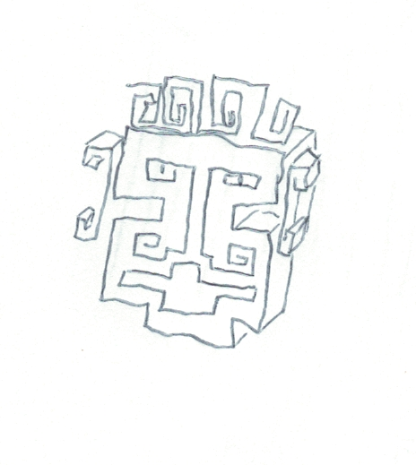
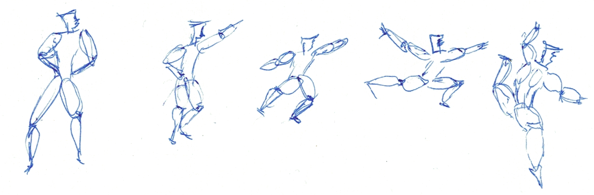

Jan 2025
 
WTFPL 2.0 Do any thing you want with this book except claim you wrote it
This is a front end to a pandoc toolchain based on mind mapping for structuring the toughts with a real time rendering of the markdown.
Markdown that includes pandoc-include and my own one to integrate graphviz like this :
The home page of SCAM is on github
I am too lazy to write an install script, make a debian package, or a full pip requirements solution because I need binary installs.
As a result I resorted to the solution of the lazy man which source tells you all you need : making it a docker file.
FROM debian
ENV LANG C.UTF-8
RUN mkdir -p /usr/share/man/man1 && mkdir -p /usr/share/man/man7
RUN apt-get update && apt-get -y dist-upgrade \
&& rm -rf /var/lib/apt/lists/*
RUN apt-get update && apt-get -y --no-install-recommends install \
python3 python3-pip python3-venv python3-setuptools \
python3-sqlalchemy texlive pandoc graphviz virtualenv \
python3-magic sqlite3 texlive-xetex texlive-latex-extra \
texlive-fonts-recommended texlive-lang-french lmodern
RUN useradd scam -d /app --uid 1000 -m -s /bin/bash
COPY --chown=scam . /app
WORKDIR /scam
RUN mkdir /scam/assets /venv
RUN chown -R scam:scam .
COPY . .
RUN virtualenv --system-site-packages /venv
RUN . /venv/bin/activate
COPY requirements.full.txt .
ENV PYTHONPATH=/venv/bin
RUN /venv/bin/python -m pip install --no-cache-dir \
--disable-pip-version-check -r requirements.full.txt
EXPOSE 5000
USER scam
CMD . /venv/bin/activate && cd /scam && DB=${db:-scam} /venv/bin/python /app/scam.pywith the following requirements :
archery
pandoc-include
dateutils
multipart
filelock
Mako
pandocfilters
panflute
passlib
python-dateutil
SQLAlchemy>=2
SQLAlchemy-Utils
time-uuidto use it I recommend the side car technique wich can be used this way so that you can access the assets dir which contain the book :
docker build -t scam .
docker run -i -t -e db=bookname \
--mount type=bind,src=.,dst=/scam \
-p5000:5000 scam
firefox http://127.0.0.1:5000The landing page is a Create Retrieve Update Delete skeleton generated from the data model (which is the HTML of the page by design).
It is recommended to create a user first because all other interesting page are accessible only when connected.
On successful login you should see this :
Time to create your first « idea » ; a small entry of less than 500 characters, like a microblogging entry to know what topic you are gonna talk of
I chose the policy that one micro item is related to one and only one attachment of the embedable kind you want.
These items will be available in the markdown editor
First comment is specific in the sense it is also used for the title. With pandoc you can add metada used for LaTeX.
The markdown extension useds here is the pandoc one
Here is the one that I put in the capture
% TITLE
% AUTHOR
% DATE \
\
{width=5cm}
\
\ {width=15cm}
---
header-includes:
- \usepackage[french]{babel}
- \usepackage{hyperref}
- \definecolor{myblue}{rgb}{0.28, 0.24, 0.48}
- \hypersetup{colorlinks=true, allcolors=myblue}
- \let\tmp\oddsidemargin
- \let\oddsidemargin\evensidemargin
- \let\evensidemargin\tmp
- \reversemarginpar
---Your real time markdown input is defintily confused, it is time to add more postists dans develop them.
As you can see text input always have a reminder of the available for inclusion attachment and make it easy to insert it as a picture.
it’s now time to visit the book rendering URL. You should have a side by side view of the generated standalone HTML and the generated PDF.
Ather a few more entries that are boring because very repitive if you consult the graph URL you should have now more entries.
The « book order » is the red lines, they follow the ascending id order but can be overriden with the book_order rank available in the text view.
This book is available in the repository as a sqlite database.
To try it :
docker run -i -t -e db=aide --mount type=bind,src=.,dst=/scam \
-p5000:5000 --user 1000:1000 scam
firefox http://127.0.0.1:5000